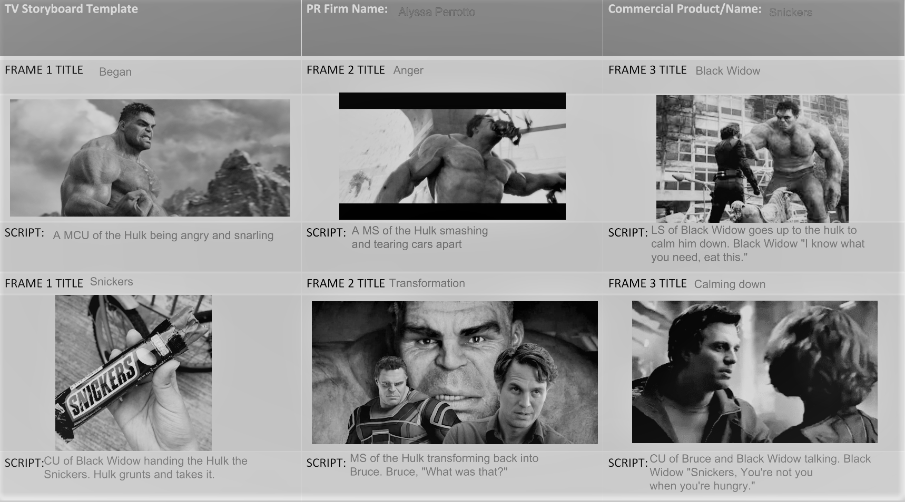

In one of my classes, we were asked to choose a company and create a commercial storyboard incorporating their slogan and brand personality. I selected Snickers for this project. At the time, I was really into Marvel, especially since Avengers: Endgame had just been released, so I drew inspiration from that. The storyboard I developed centered around the idea of a hero losing their cool in the middle of a high-stakes battle, only to be calmed down after eating a Snickers. The commercial aligned with Snickers’ signature “You’re not you when you’re hungry” slogan, using humor and the iconic energy of Marvel characters to make the concept engaging. I focused on ensuring the storyline reflected Snickers’ fun and lighthearted brand personality, while also tapping into the superhero craze that was incredibly popular at the time.
 Back to Home